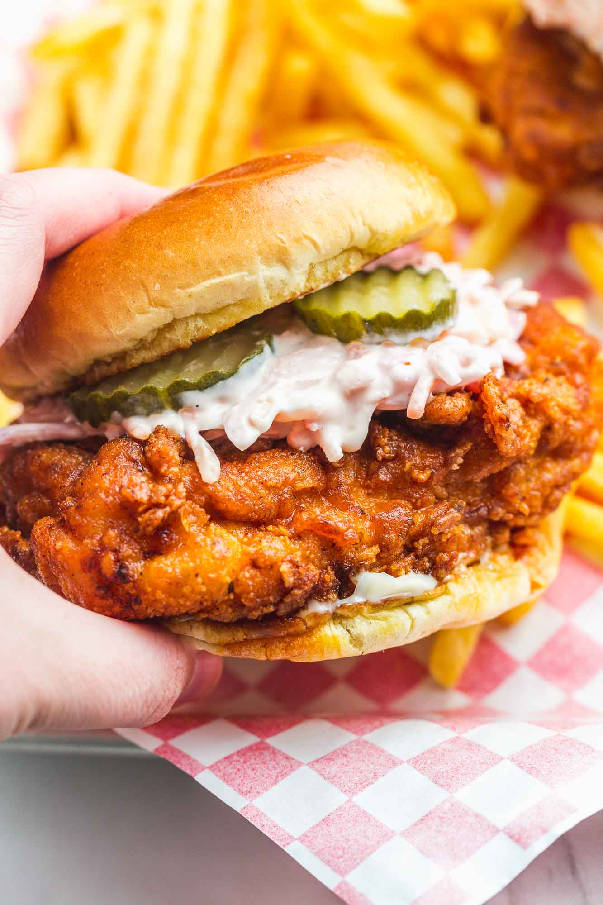

Nashville Hot Chicken Sandwich

As you would expect, Nashville hot chicken is fried chicken with a major kick. The chicken gets a hefty dose of spice thanks to hot sauce and cayenne in the coating as well as a spicy sauce drizzled over the top. This version of fried chicken is served up with white bread and pickles to help balance out the heat.
Sandwich Ingredients
Cure:
4 chicken thighs, legs, or breasts
Salt generously (optional brine for 30-60min)
Dredge:
Buttermilk Dip:
2 tablespoons pickle juice
(optional) Splash of cold matsutake shoyu
Hot Oil Spices:
1 tablespoon garlic powder
1 tablespoon of smoked (or regular) paprika
1 tablespoon of kosher salt
2 tablespoons of brown sugar
Sandwich Instructions
Cure the Chicken if you have time: place chicken in a bowl and season with salt and pepper. Cover with plastic wrap and leave in the fridge for 24 hours.
Fill pot medium size pot with oil for fry
Mix two large eggs, 2 cups buttermilk, 2 tablespoons of hot sauce, 2 tablespoons of pickle juice, and a splash of matsutake shoyu.
Mix spices for spicy oil: Cayenne, garlic powder, smoked paprika, kosher salt, dakr brown sugar and whisk until thoroughly combined.
Mix chicken with flour mix, then buttermilk mix, then flour mix again
Once chicken is coated and oil is at 325F or 160C drop chicken in batches for 15-18 minutes. (or until internal temp is at 165F)
Once chicken is done, mix hot oil with our hot oil spices and toss chicken in HOT mixture.